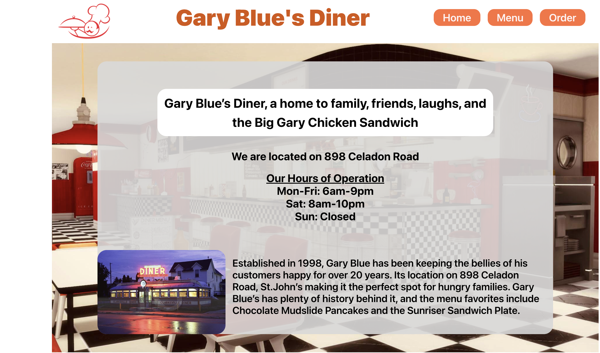
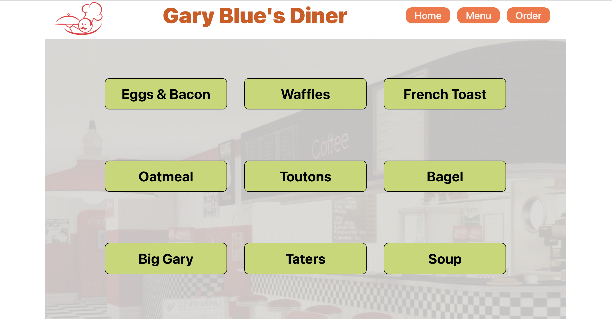
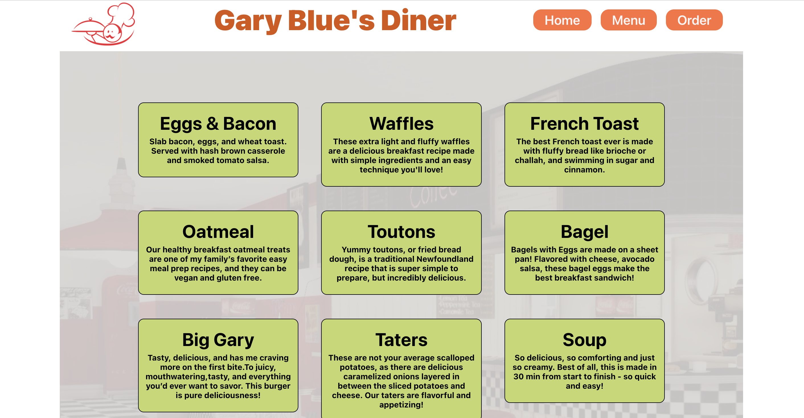
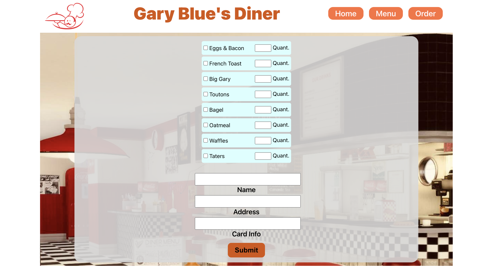
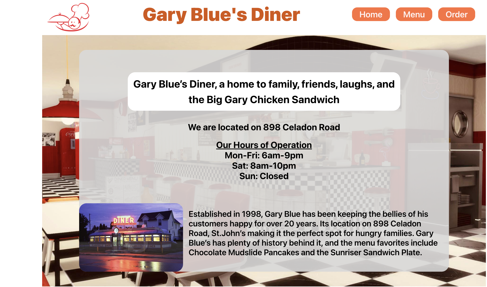
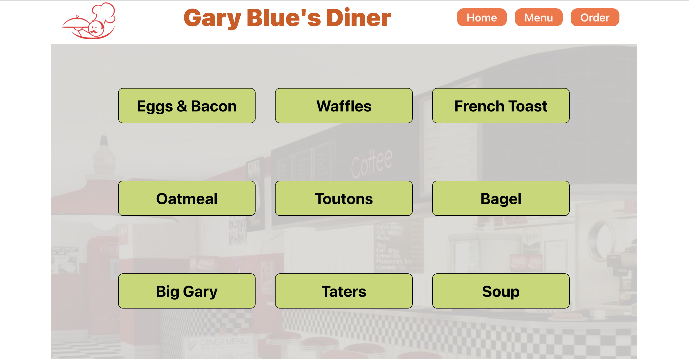
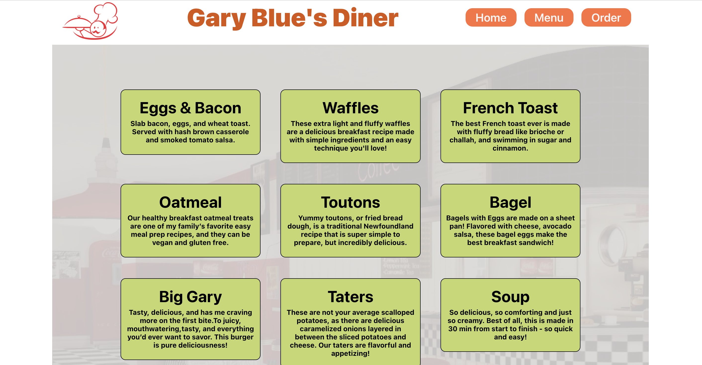
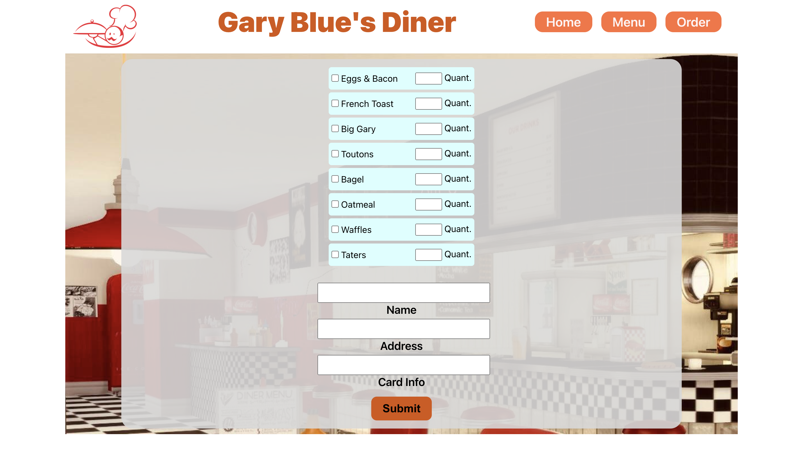

Project 1 Miderm Sprint
The website for Gary Blue's Diner creates a dynamic and engaging online presence, providing a lively platform for this vibrant restaurant establishment.
Technologies used: HTML, CSS, JavaScript
   Web Developer
Hello, I'm Mohamed Amine Maghrebi a highly skilled and dedicated networking and communication engineer with a passion for designing and optimizing robust systems that facilitate seamless information exchange. With a background in Master of Engineering in Computer Science I bring a wealth of experience in developing and implementing cutting-edge solutions to meet the ever-evolving demands of modern communication infrastructures. My expertise spans a wide range of networking technologies, and I am committed to ensuring the reliability, security, and efficiency of communication networks. Whether it's troubleshooting complex issues, designing scalable architectures, or staying abreast of emerging trends, I thrive on the challenges inherent in the dynamic field of networking and communication.
The website for Gary Blue's Diner creates a dynamic and engaging online presence, providing a lively platform for this vibrant restaurant establishment.
Technologies used: HTML, CSS, JavaScript
   The primary goal is to reinforce essential web development skills, focusing on the
concepts of making HTTP requests using XMLHttpRequest and Fetch API, and handling
the received data through DOM programming and fundamental JavaScript skills. The
assignment also emphasizes the application of HTML, CSS, and Bootstrap to showcase
a well-rounded expertise in web development. Students are expected to create a
responsive web page that makes API calls, processes the data dynamically,
and demonstrates proficiency in styling using CSS and Bootstrap
Technologies used: HTML, CSS, JavaScript

Website about computer system used some tools :
Technologies used: HTML, CSS,